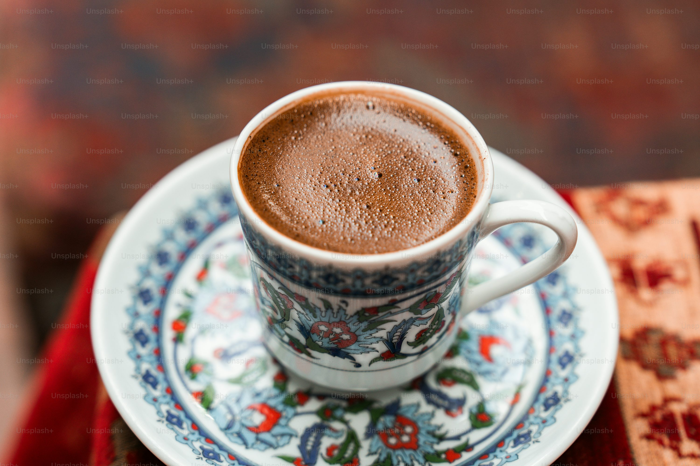

Turkish Coffee

Ingredients
- 2 tsp extra-fine ground coffee
- 100ml cold water
- 1 tsp sugar (optional)
Preparation
- Combine coffee, water and sugar in cezve
- Heat slowly until foam rises (3-4 mins)
- Remove from heat when foam subsides
- Repeat heating process twice more
- Pour slowly to preserve foam
- Here is a youtube short quickly explaining it:
- short Explaination
Video from @brewinghabits
Channel